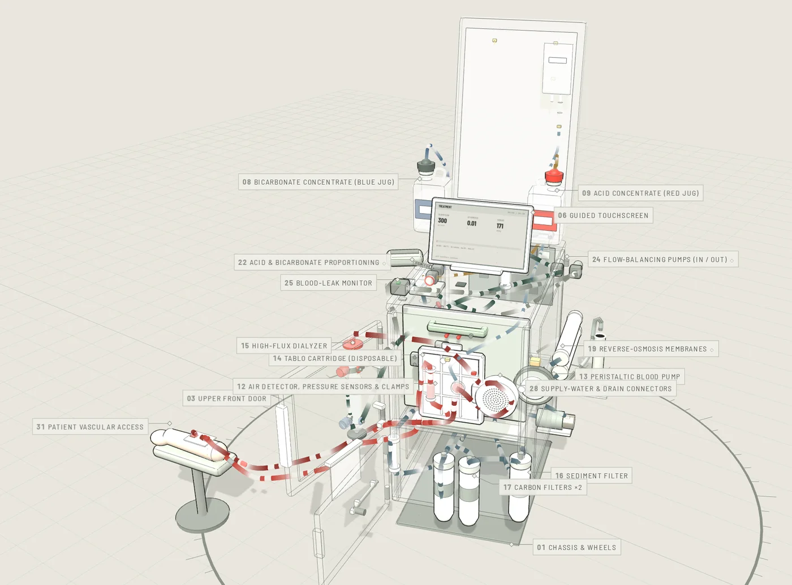

What happens on site still reaches us as hours and forms, filled in afterwards.
22:47
SERVICE REPORTS DUE
Written late, from memory. Hard to trust.
Four questions we can't answer today
Each team that depends on field service has one.
?
Finance
What did this repair actually cost?
NO RELIABLE ANSWER TODAY
?
Service leadership
Where does FSE time really go?
NO RELIABLE ANSWER TODAY
?
Quality & Regulatory
Which failures and part lots are trending?
NO RELIABLE ANSWER TODAY
?
Executive team
Will service cost grow slower than the fleet?
NO RELIABLE ANSWER TODAY
Four teams. Four gaps. One cause.
One root cause
It's how our field data is produced.
Wrong time
Written after the job, often that evening, from memory.
Wrong method
Typed by hand, even facts the device already knows.
Wrong reason
Forms are filled in only because they are required. They give the FSE nothing back, so we get the bare minimum.
The usual fix is more control: more forms, more fields, more approvals.
It makes things worse.
Why more control makes it worse
THE CONTROL LOOP
CYCLE 1
1
Management can't see the field
2
So it adds forms, fields and approvals
3
FSEs fill them in late, from memory, with minimum effort
4
The data is incomplete. Nobody trusts it.
FORMS PER JOB
TRUST IN THE DATA
Each cycle adds forms and removes truth.
The service loop
THE SERVICE LOOP
CYCLE 1
1
Equip FSEs with tools that save time on every job
2
Adoption follows without policing costs
3
Data is captured during the work, accurately
4
Better data makes the tools smarter
PAPERWORK PER JOB
QUALITY OF THE DATA
Tools that make the job faster give the company accurate data at no extra cost.
Example
One work order, captured by the system
The FSE only adds what the system can't know.
SYSTEM-CAPTUREDFSE INPUT: TAP, SCAN OR VOICE

VOICE NOTE
PN · LOT · SN CAPTURED ✓
SERVICE RECORDIN PROGRESS
Remote expert support · Example
One senior's fix becomes every FSE's playbook
Every remote-support call is recorded and turned into a reusable case the company owns.
01LIVE CALL
02AI BUILDS THE CASE
03EVERY FSE CAN FIND IT
→
→
REC · JUNIOR FSE ON SITESENIOR FSE REMOTE
SENIORMove the camera to the connector.
SENIORMeasure the voltage at that terminal.
JUNIORReseated it. Functional test passes.
CASE #18421DRAFTED BY AI
SYMPTOMIntermittent conductivity alarm after startup
03:42Connector discoloration spotted
07:15Voltage measured at the terminal
09:03Sensor ruled out
12:27Root cause: loose connector
18:40Reseated; functional test passed
✓ APPROVED BY SENIOR FSE
conductivity alarm after startup
27 similar cases found
Connector9
Sensor6
Flow path5
▶
Case #18421Watch 06:20–10:45 · approved
The know-how stays when people leave, and one senior's experience reaches every site.
One company tablet. Company-owned data.
WORK ORDER · EXAMPLE09:18
Tablo · on site
MACHINE HISTORYLast visit 43 days ago · conductivity alarm · valve replaced
Scan parts
Voice note
Diagrams
Remote expert
Review & sign
The company owns
Service records and part scans
Equipment photos and remote-support video
The case library, which stays when people leave
Our service data stays ours: an asset that compounds for us, not for a vendor’s AI
Built-in safeguards
FSEs verify their own data before it is used
Every record signed by the FSE who did the work
Written notice of what is collected, as some states require
No company data on personal phones
Out of scope
Off-shift location: legal risk, no business value
Patient information: HIPAA exposure
Personal devices, apps and messages
Since February 2, 2026 · FDA QMSR
What every service record must contain
21 CFR Part 820 now incorporates ISO 13485. Section 820.35(b) sets the minimum content.
REQUIRED BY 820.35(b)HOW THIS MODEL CAPTURES IT
The design that saves FSE time produces every required field.21 CFR 820.35(b)
Proven elsewhere
It's been done before
Our four questions have already been answered elsewhere.
Finance · Executive team
What did this repair cost? Will service cost grow slower than the fleet?
Rolls-Royce
AIRCRAFT ENGINES · TOTALCARE
Prices engine service at a fixed rate per flying hour, and uses engine health data to plan maintenance before it is needed.
FOR TABLOKnow the cost of every work order, then the yearly service cost per installed Tablo.
SOURCE: ROLLS-ROYCE
Service leadership
Where does FSE time really go?
UPS
PARCEL DELIVERY · DIAD
Since 1991, drivers have carried a company-issued handheld that records signatures and scans on the spot. It saved about 59 million pages of paper a year.
FOR TABLOOne company tablet. Every step recorded as it happens.
SOURCE: COMPUTER HISTORY MUSEUM
Quality & Regulatory
Which failures and part lots are trending?
Medtronic
MEDICAL DEVICES · WITH FDA
Piloted generative AI with rule-based automation in complaint handling. AI helps with data entry and summaries; specialists focus on critical analysis.
FOR TABLOAI reads complaint and service text. Quality reviews what it finds.
SOURCE: MDIC CASE STUDY, FEB 2026
Closer to home
We have solved this before, with Salesforce
SALES, ON SALESFORCE
FIELD SERVICE
Reps kept customers in their own heads and spreadsheets.
→
FSEs keep repair know-how in their own heads.
Data became the company's. Credit stayed with the rep.
→
Data becomes the company's. Credit stays with the FSE.
Deals outside Salesforce got no pricing or support.